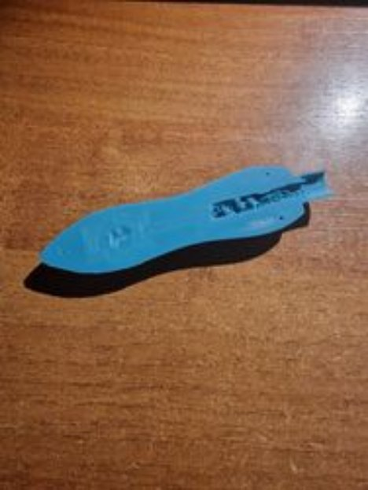
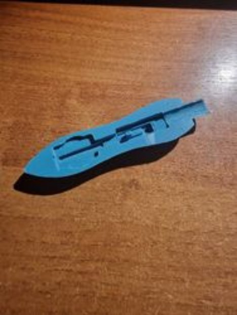
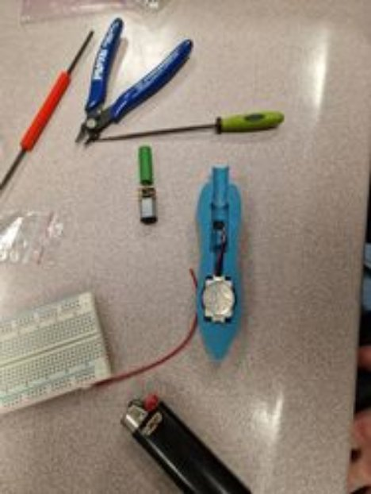
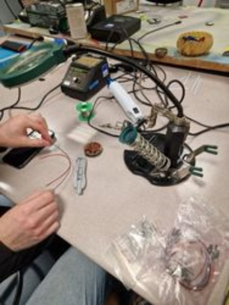
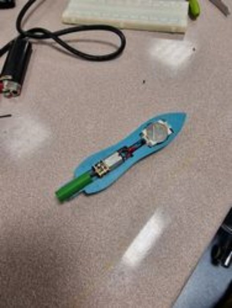
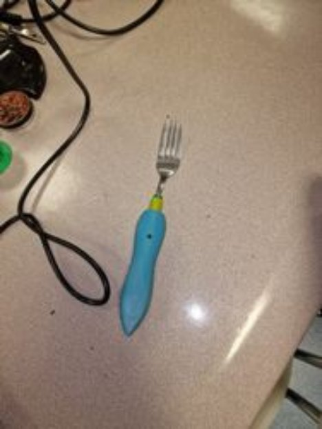

PROJECT OVERVIEW¶
SpinFork: Automatická vidlička na špagetti¶
Autor: Adam Baran-Tomik & Lukáš Čižmárik
Cieľ projektu:
Navrhnúť, vyvinúť automatickú vidličku na špagety, SmartFork, ktorá zjednoduší konzumáciu špaget a iných dlhých cestovín. Automatické navíjanie cestovín, čo zaisťuje pohodlné a elegantné jedlo bez nutnosti manuálneho otáčania vidličky.

Predpokladané výstupy projektu:
Prototyp vidličky: Funkčný prototyp demonštrujúci automatické navíjanie cestovín. Výrobný plán: Detailný výrobný plán vrátane nákladov. Testovanie: Výsledky testov pre ďalšie vylepšenia.
Kľúčové vlastnosti:
- Automatické navíjanie aktivované tlačidlom.
- Batéria s dlhou výdržou (CR2032 3V).
- Demontovateľný a čistiteľný dizajn.
- Ergonomická rukoväť na pohodlné držanie pre rôzne veľkostí rúk.

Cieľová skupina:
- Jednotlivci s obmedzenou motorikou.
- Milovníci cestovín hľadajúci nové gastronomické zážitky.
- Zákazníci so záujmom o technologické novinky v kuchyni.
- Deti pre spríjemnenie konzumácie cestovín hravou formou.
- Reštaurácie a cateringové služby hľadajúce spôsob, ako zvýšiť efektivitu a zároveň udržať eleganciu pri podávaní jedál.
- viac v kapitole: Business layer

Predpokladaný vplyv projektu:
Zlepšenie užívateľského zážitok pri jedle špaget a podobných jedál. Poskytovanie pomoci tým, ktorí majú problémy s konzumáciou týchto jedál. Zaujímavá príležitosť pre reštaurácie na zdokonalenie ich servisu a zážitku pre zákazníka.
Predpokladaný rozpočet:
- Vývoj a dizajn: 5 EUR
- Výroba prototypu: 10 EUR
- Testovanie: 5 EUR
- Marketing a distribúcia: 0 EUR
- Rezerva na nepredvídateľné výdavky: 5 EUR
- Celkom: 25 EUR

KNOWLEDGE CONTRIBUTION AND RESOURCES¶
Prehľad procesu od návrhu až po výrobu a zoznam použitých komponentov:
Tento kombinovaný prístup k vývoju a výrobe umožňuje nielen efektívne prototypovanie, ale taktiež poskytuje cenné informácie pre budúce výrobné procesy. Vďaka týmto technológiám a komponentom ste schopní vyvinúť produkt, ktorý je inovatívny, funkčný a pripravený na ďalšie testovanie a vylepšenie.


Modelovanie v Programe Fusion 360:
Fusion 360 je pokročilý nástroj pre CAD (počítačom podporovaný design), ktorý vám umožnil presne navrhnúť jednotlivé súčasti vidličky. Vďaka tomu ste mohli vytvoriť detailný a funkčný dizajn pred samotnou tlačou.
Príprava pre Tlač (Slicing) Pomocou Prusa Slicer:
Prusa Slicer je softvér, ktorý prevádza 3D modely na inštrukcie pre 3D tlačiareň. Použitie tohto slicera zaisťuje, že výsledná tlač bude zodpovedať navrhnutému modelu s potrebnou presnosťou a kvalitou.
Čas tlače 3:40 hod.


3D Tlač:
Použitie 3D tlače umožnilo rýchly a efektívny vývoj prototypu. Táto technológia je ideálna na experimentovanie s dizajnom a funkciami, pretože umožňuje rýchle iterácie a zmeny. Použitá 3D tlačiareň bola Prusha i3 vo FabLabe.
Komponenty:
- Motor s prevodom na 30RPM: Tento motor poskytuje optimálnu rýchlosť a silu pre navíjanie cestovín, čo je kľúčová funkcia SpinFork.

- Tlačidlo: Umožňuje užívateľom aktivovať mechanizmus točenia.

- Batéria: Poskytuje 3V napätie pre motor. Výber správneho typu a veľkosti batérie je dôležitý na dosiahnutie požadovanej výdrže, ktorá je odhadovaná na 3,5 hodiny.

- Kryt na Batériu: Zaisťuje bezpečné a jednoduché umiestnenie batérie vo vnútri vidličky.

Upevnenie vidličky pomocou prepojovacieho komektora, ktorý prepája motor a vidličku


Príprava vidličky pre použitie v projekte

Po zakúpení komponentov sme začali skúšať funkčnosť riešenia na základe návrhu:
Vytlačili sme viacero veľkostí prepojovacích komektorov (9mm a 9,5mm) aby sme zistili, ktorý vyhovuje najviac.
Čas tlače: 20 min.

Prvý neúspešný pokus o 3D tlač, vnútorný povrch bol veľmi drsný a komponenty sa nezmestili



Druhý neúspešný pokus o 3D tlač, vnútro pre komponenty bolo hladké s presnými rozmermi, avšak vonkajší povrch bol veľmi drsný. Pri pokuse o úpravu vonkajšieho povrchu sme použili teplovzdušnú pištoľ s myšlienkou uhladiť povrch, avšak výtlačok sme nahriali až tak, že sa zmrštil.

Finálny výtlačok III. kde sme model tlačili rovnou plochou dole (tak ako výtlačok I.) avšak so zväčšenými rozmermi.
Skladanie modelu vo FabLab z výtlačku III:




Budúce možné vylepšenia:
- vyššia rýchlosť otáčania (60 RPM),
- kryt na batériu bez nutnosti odskrutkovania,
- efektívnejšie vysúvanie vidličky pre možnosť použitia v umývačke,
- väčšia kapacita batéria, prípadne použiť AKU batériu,
- variant ergonomického dizajnu pre deti,
- plne vodeodolná SpinFork.
BUSINESS LAYER¶
Prípady využitia nášho riešenia sú trojaké:
- Spinfork môže slúžiť ako spôsob na zlepšenie zážitku jedenia pre malé deti. Pokiaľ by dieťa malo problém s pozornosťou počas jedenia alebo by jednoducho nechcelo jesť, SpinFork môže svojou intuitívnosťou a nemonotónnosťou pomôcť dieťaťu jesť.
- SpinFork môže pomôcť ľudom s obmedzenou motorikou v rukách. SpinFork odstraňuje určitý faktor zložitosti pri konzumácii niektorých jedál.
- Ďalšie využitie SpinFork-u je jednoducho ako zábavná technologická vychytávka.

SYSTEM LAYER¶
Pri vytváraní SpinFork sme využili modelovací nástroj Fusion360, kde sme prototyp modelovali vo verziách V1 a V2 ktoré sa líšia vo vnútorných rozmeroch pre komponenty. Model automatickej vidličky sme následne slicovali v programe od Prusha, následne sme využili 3D tlačiarne vo FabLab kde sme vytlačili viacero modelov automatickej vidličky. Ako technologické komponenty tejto automatickej vidličky sme použili motor s prevodom o rýchlosti 30RPM, tlačidlo, batériu a púdrzo batérie pre typ CR2032 s napätím 3V. Hotový 3D výtlačok (vo finálnej verzí V3) spolu s komponentami sme podľa navrhnutej schémy pájkovali vo FabLabe.

TECHNICAL DOCUMENTATION¶
Prvotný návrh obvodu pre projekt SpinFork. Obvod bol pomerne jednoduchý, jediné, čo sme potrebovali bolo motor, batéria a tlačidlo.

Následne sme tento návrh preniesli do simulátora obvodu Tinkercad, kde sme otestovali funkčnost nášho obvodu po zapojení do komponentu breadboard.

Výpočet doby prevádzky¶
kapacita_baterie (CR2032) = 210 # mAh prud (motor) = 60 # mA
doba_prevadzky = kapacita_baterie / prud # hodiny doba_prevadzky = 3,5 hod.
Motor s parametrami 3V a 60mA by mal vydržať bežať na batérii s kapacitou 3V a 210mAh približne 3.5 hodiny.
Technologická vrstva¶


Cenník komponentov:¶
| Komponent | Počet kusov | Zdroj / Kúpa | Cena 1 ks (€) |
|---|---|---|---|
| Komponent | Počet kusov | Zdroj / Kúpa | Cena 1 ks (€) |
|---|---|---|---|
| Motor s prevodom na 30RPM | 1 | Techfun | 5.50 |
| Tlačidlo | 1 | GME | 0,12 |
| Batéria | 1 | GME | 0,69 |
| Kryt na Batériu: | 1 | GME | 0,57 |
| Skrútka | 3 | GME | 0,08 |
| Kábel | 2 | GME | 0,11 |
| Tlač 3D modelu | 1 | Fablab | 1,20 |
| Vidlčka | 1 | - | ~0.50 |
| Cena SPOLU (€) | 9,04 |
|---|---|